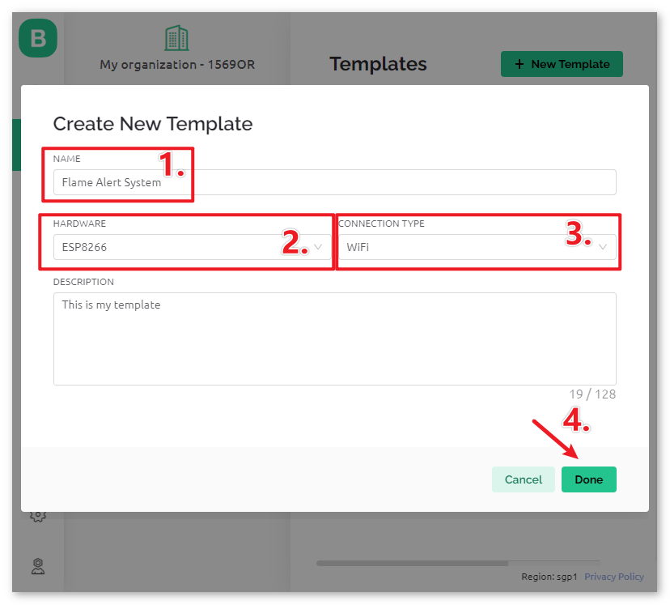
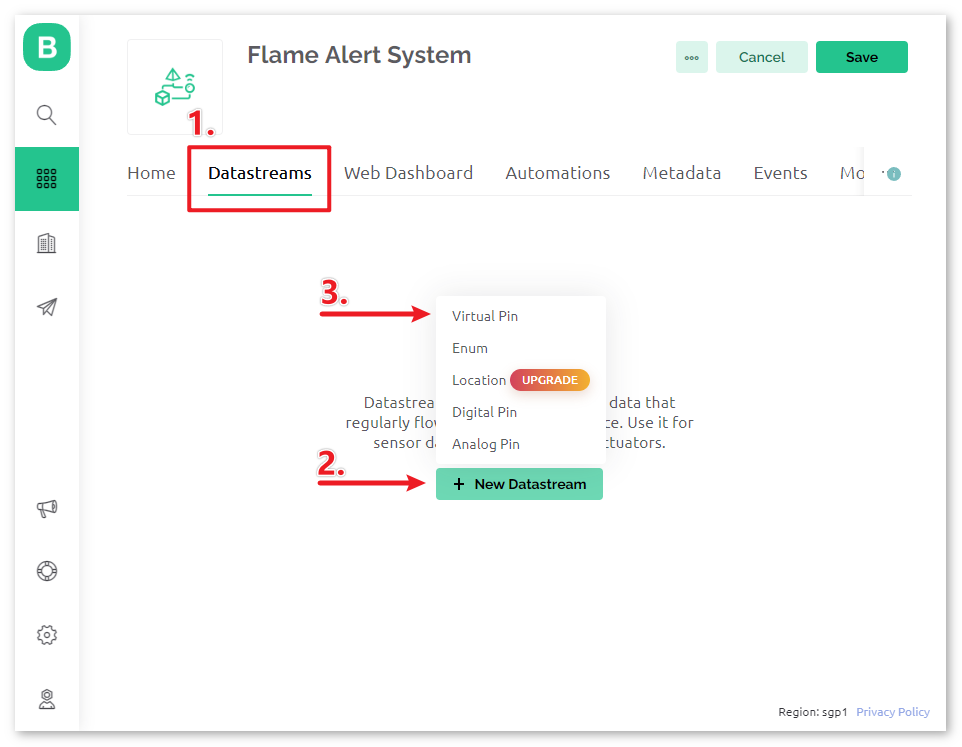
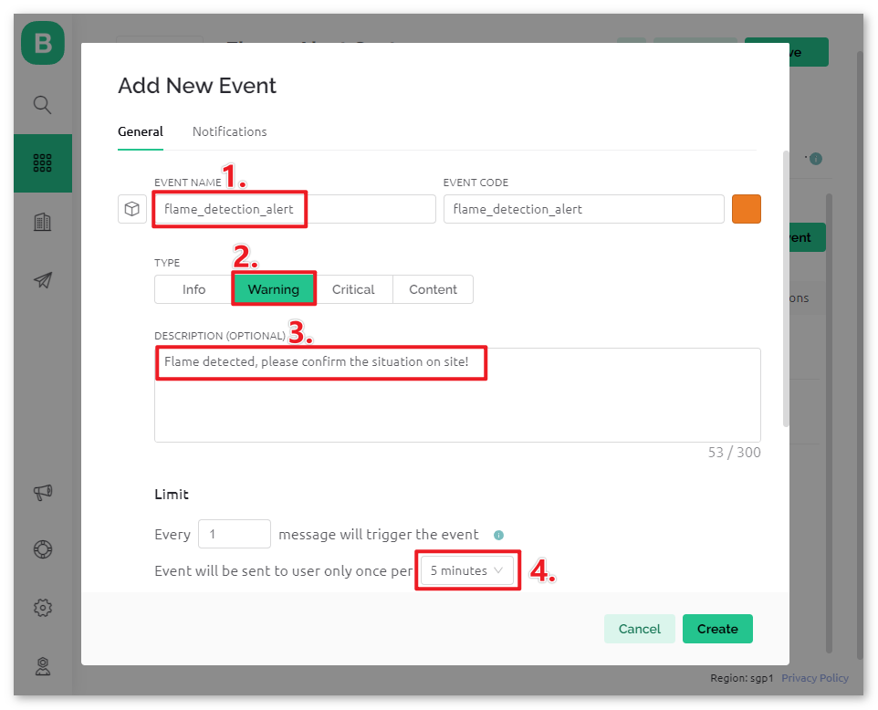
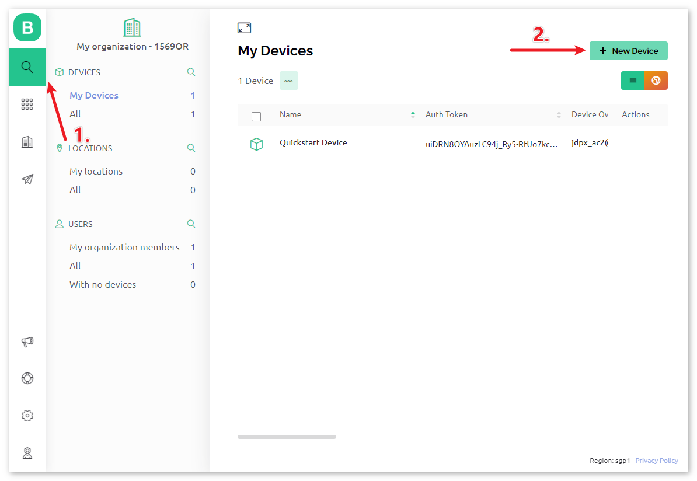
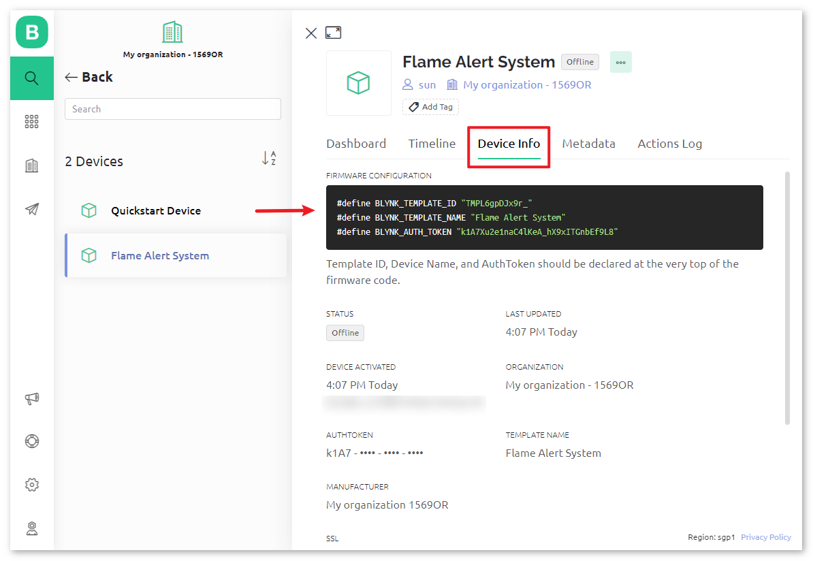
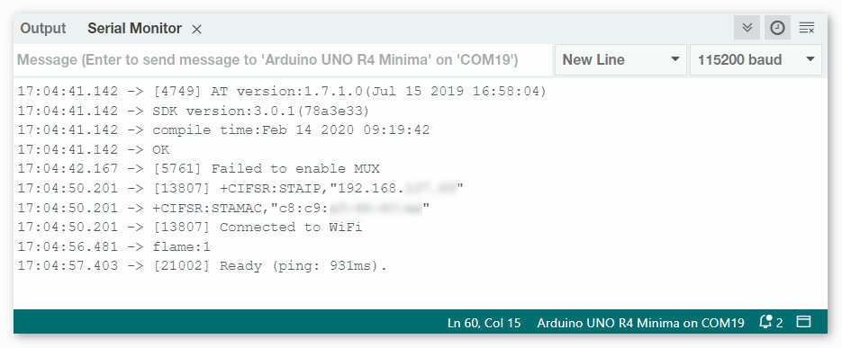
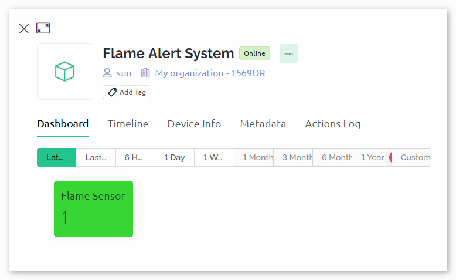

注釈
こんにちは、SunFounderのRaspberry Pi & Arduino & ESP32愛好家コミュニティへようこそ！Facebook上でRaspberry Pi、Arduino、ESP32についてもっと深く掘り下げ、他の愛好家と交流しましょう。
参加する理由は？
エキスパートサポート：コミュニティやチームの助けを借りて、販売後の問題や技術的な課題を解決します。
学び＆共有：ヒントやチュートリアルを交換してスキルを向上させましょう。
独占的なプレビュー：新製品の発表や先行プレビューに早期アクセスしましょう。
特別割引：最新製品の独占割引をお楽しみください。
祭りのプロモーションとギフト：ギフトや祝日のプロモーションに参加しましょう。
👉 私たちと一緒に探索し、創造する準備はできていますか？[ここ]をクリックして今すぐ参加しましょう！
Blynkを使用した炎警報システム
この章では、Blynkを使用して自宅の炎警報システムのデモを作成するプロセスをご紹介します。炎センサーを活用することで、自宅での火災の可能性を検出できます。検出した値をBlynkに送ることで、インターネット経由で自宅をリモートで監視できます。火災が発生した場合、Blynkは速やかにメールでお知らせします。
1. 回路の組み立て
注釈
ESP8266モジュールは、安定した動作環境を確保するために高い電流が必要です。9Vのバッテリーが接続されていることを確認してください。

2. Blynkの設定
2.1 テンプレートの作成
まず、Blynk上で「Flame Alert System」のテンプレートを作成します。以下の手順に従ってください。

HARDWARE は ESP8266 、 CONNECT TYPE は WiFi に設定してください。


2.2 データストリーム
Datastream ページで、炎センサーモジュールの値を取得するための Virtual Pin 型の Datastream を作成します。


Virtual Pin の名前を flame_sensor_value に設定します。 DATA TYPE を Integer にし、MINとMAXは 0 と 1 に設定します。

2.3 イベント
次に、炎の検出を記録し、メール通知を送る event を作成します。

注釈
こちらの設定に合わせることをお勧めします。そうしないと、プロジェクトを実行するためのコードを修正する必要が出てくるかもしれません。
EVENT NAME を flame_detection_alert に設定します。同時に、イベントがトリガーされたときに送るメールの内容を DESCRIPTION で設定できます。また、イベントのトリガー頻度の制限も設定できます。


Notifications ページへ移動して、メールの設定を行います。

2.4 Webダッシュボード
Unoボードから送られてくるセンサーデータを表示するためにも、 Web Dashboard の設定が必要です。
Web Dashboard ページに Lable widget をドラッグアンドドロップします。

Lable widget の設定ページで、 Datastream を flame_sensor_value(V0) に選択します。次に、データの値に応じて WIDGET BACKGROUND の色が変わるように設定します。表示される値が1の場合、緑色になります。値が0の場合、赤色になります。


2.5 テンプレートの保存
最後に、テンプレートを保存してください。

テンプレートを編集する必要がある場合は、右上の編集ボタンをクリックできます。

3. コードを実行する
ultimate-sensor-kit\iot_project\wifi\01-Flame_alert_systemのパス内にある01-Flame_alert_system.inoファイルを開くか、このコードを Arduino IDE にコピーしてください。炎検知アラートテンプレートを使ってBlynkデバイスを作成します。その後、
BLYNK_TEMPLATE_ID、BLYNK_TEMPLATE_NAME、そしてBLYNK_AUTH_TOKENを自分のものに置き換えてください。#define BLYNK_TEMPLATE_ID "TMPxxxxxxx" #define BLYNK_TEMPLATE_NAME "Flame Alert System" #define BLYNK_AUTH_TOKEN "xxxxxxxxxxxxx"




使用するWiFiの
ssidとpasswordも設定する必要があります。char ssid[] = "your_ssid"; char pass[] = "your_password";
正しいボードとポートを選択したら、 書き込み ボタンをクリックしてください。
シリアルモニターを開き（ボーレートを115200に設定）、接続成功のメッセージが表示されるまでお待ちください。

注釈
「ESP is not responding」というメッセージが出た場合は、以下の手順に従ってください。
9Vの電池が接続されていることを確認してください。
RSTピンを1秒間GNDに接続して、ESP8266モジュールをリセットします。その後、抜いてください。
R4ボードのリセットボタンを押してください。
この操作を3〜5回繰り返す必要がある場合もありますので、ご注意ください。
これで、Blynkが炎センサーからのデータを表示します。ラベルウィジェットでは、炎センサーによって読み取られた値が表示されます。値が1であれば、ラベルの背景は緑色で、0であれば赤色で表示され、アラートメールがBlynkから送信されます。

もしBlynkをモバイルデバイスで使用したい場合は、 モバイルデバイスでBlynkを使う方法 を参照してください。


4. コードの説明
ライブラリ初期化
開始する前に、Arduino、ESP8266 WiFiモジュール、Blynkアプリ間の通信のための必要なライブラリと設定をセットアップすることが重要です。このコードは、データ伝送の適切なボーレートで、ArduinoとESP8266モジュール間のソフトウェアシリアル接続を設定します。
//Set debug prints on Serial Monitor #define BLYNK_PRINT Serial #include <ESP8266_Lib.h> // Library for ESP8266 #include <BlynkSimpleShieldEsp8266.h> // Library for Blynk // Software Serial on Uno #include <SoftwareSerial.h> SoftwareSerial EspSerial(2, 3); // RX, TX #define ESP8266_BAUD 115200 // Set the ESP8266 baud rate ESP8266 wifi(&EspSerial);
BlynkとWiFiの設定
プロジェクトがBlynkアプリと通信できるようにするためには、Wi-Fiネットワークに接続する必要があります。ここで資格情報を指定します。
// Template ID, Device Name and Auth Token are provided by the Blynk Cloud // See the Device Info tab, or Template settings #define BLYNK_TEMPLATE_ID "TMPxxxxxx" #define BLYNK_TEMPLATE_NAME "Flame Alert System" #define BLYNK_AUTH_TOKEN "xxxxxxxxxxxxxxx" // Your WiFi credentials. // Set password to "" for open networks. char ssid[] = "your_ssid"; char pass[] = "your_password";
センサーピン & タイマー宣言
炎のピン番号を定義します。 Blynkライブラリには組み込みタイマーがあり、タイマーオブジェクトを作成します。詳しくは なぜBlynkタイマーを使用するのですか？
const int sensorPin = 8; BlynkTimer timer;
setup()関数
この関数内で、sensorPinのピンモードを設定、シリアル通信を開始、BlynkTimerを設定、Blynkアプリに接続するなどの初期設定が行われます。
timer.setInterval(1000L, myTimerEvent)を使用してsetup()のタイマー間隔を設定します。ここでは、myTimerEvent()関数を 1000ms ごとに実行するように設定しています。timer.setInterval(1000L, myTimerEvent)の第一引数を変更することで、myTimerEventの実行間隔を変更できます。
void setup() { pinMode(sensorPin, INPUT); Serial.begin(115200); EspSerial.begin(ESP8266_BAUD); delay(1000); timer.setInterval(1000L, myTimerEvent); Blynk.config(wifi,BLYNK_AUTH_TOKEN); Blynk.connectWiFi(ssid, pass); }
loop()関数
メインループはBlynkとタイマーサービスを継続的に実行します。
void loop() { Blynk.run(); timer.run(); }
myTimerEvent() & sendData()関数
void myTimerEvent() { // Please don't send more that 10 values per second. sendData(); // Call function to send sensor data to Blynk app }
sendData()関数は炎センサーからの値を読み取り、それをBlynkに送信します。炎を検出すると（値0）、Blynkアプリにflame_detection_alertイベントを送信します。Blynk.virtualWrite(vPin, value)を使用して、Blynkの仮想ピンV0にデータを送信します。詳しくは Blynk.virtualWrite() 。Blynk.logEvent("event_code")を使用して、Blynkにイベントをログします。詳しくは Blynk.logEvent() 。
void sendData() { int data = digitalRead(sensorPin); Blynk.virtualWrite(V0, data); // send data to virtual pin V0 on Blynk Serial.print("flame:"); Serial.println(data); // Print flame status on Serial Monitor if (data == 0) { Blynk.logEvent("flame_alert"); // log flame alert event if sensor detects flame } }
参考